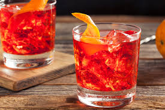

A Negroni is a classic Italian cocktail made with equal parts gin, Campari, and sweet vermouth. It is served over ice and garnished with an orange twist, offering a perfect balance of bitter, sweet, and aromatic flavors.
- Gin 1oz
- Campari 1oz
- Sweet Vermouth
- Garnish with orange twist
- Fill a mixing glass with ice
- Add the ingredients
- Stir well until the mix is well chilled
- Strain into a on the rocks glass
- Add Ice
- Garnish with orange twist